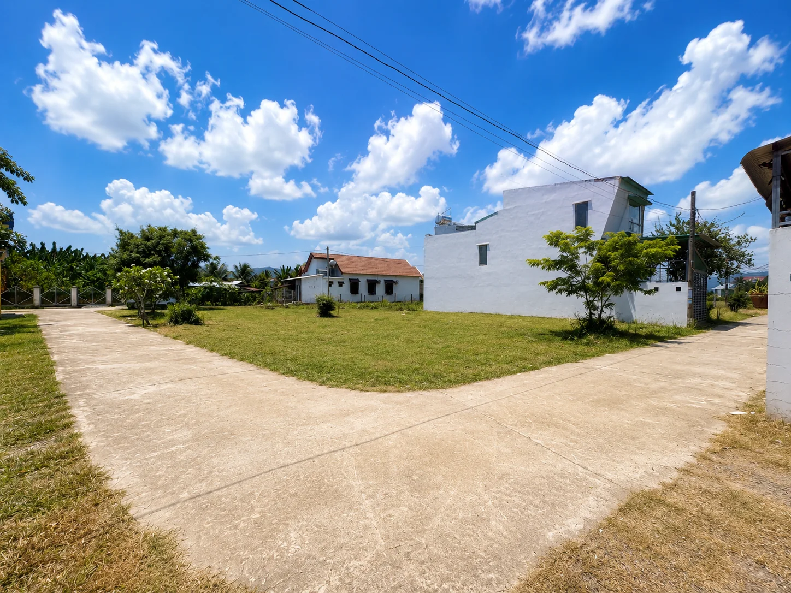
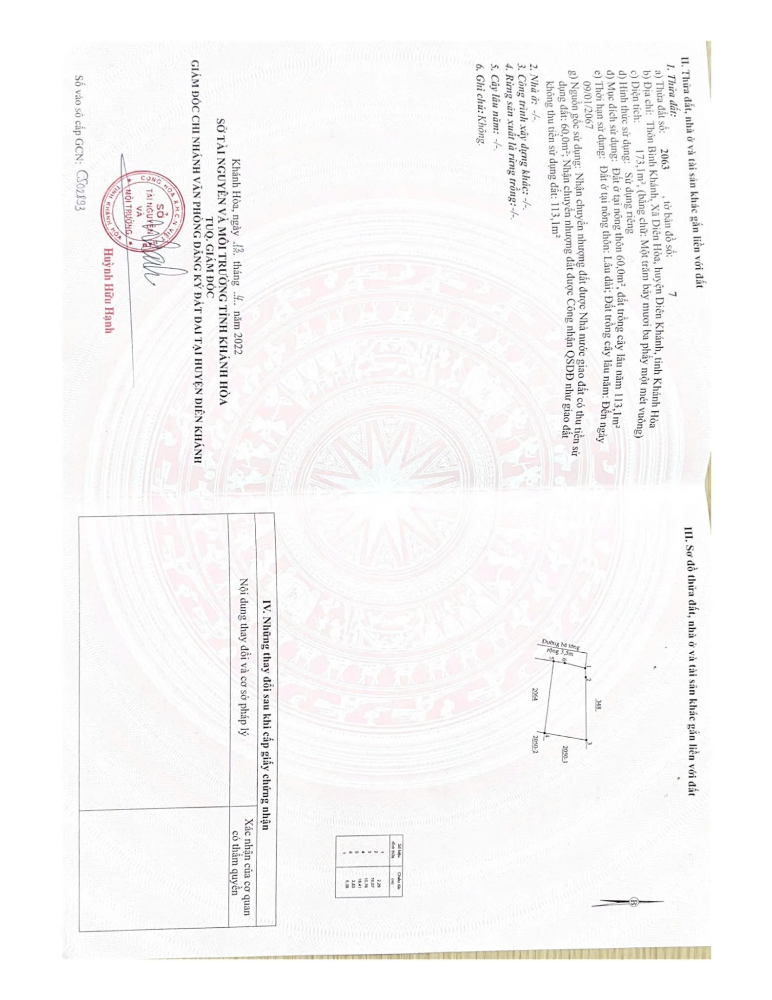
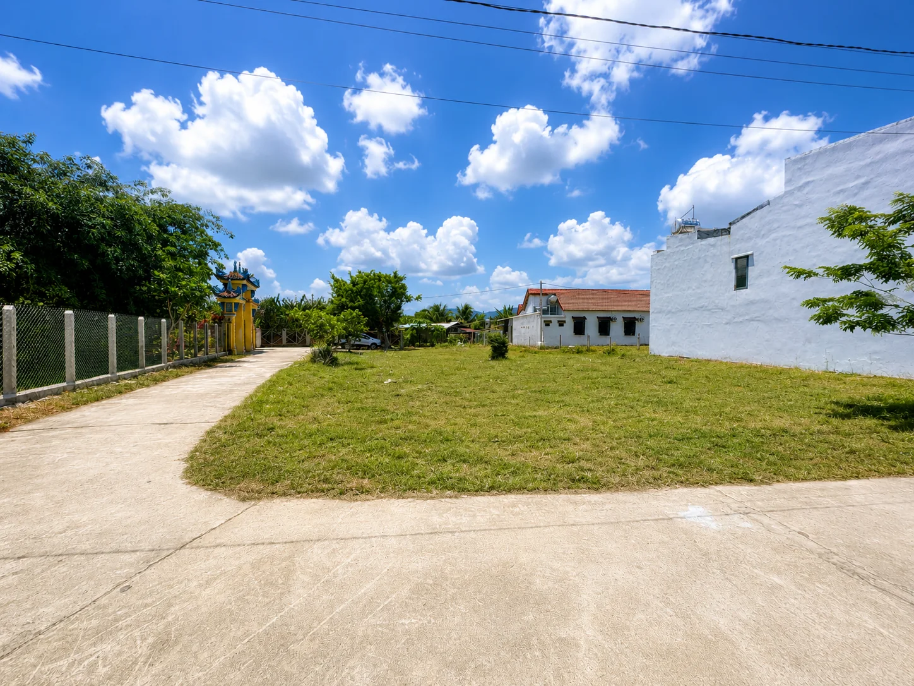
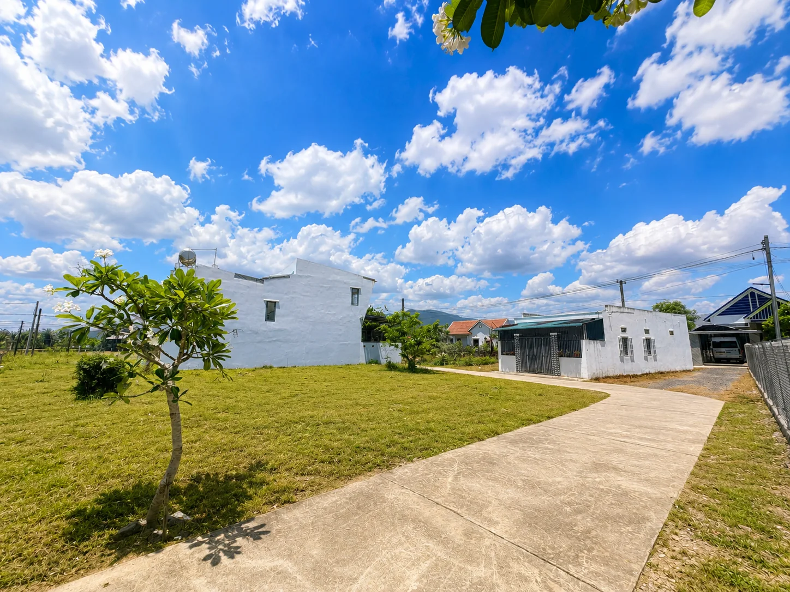
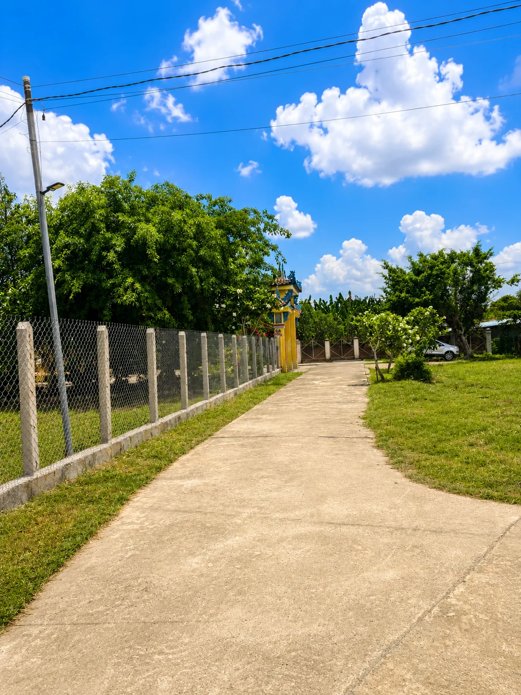
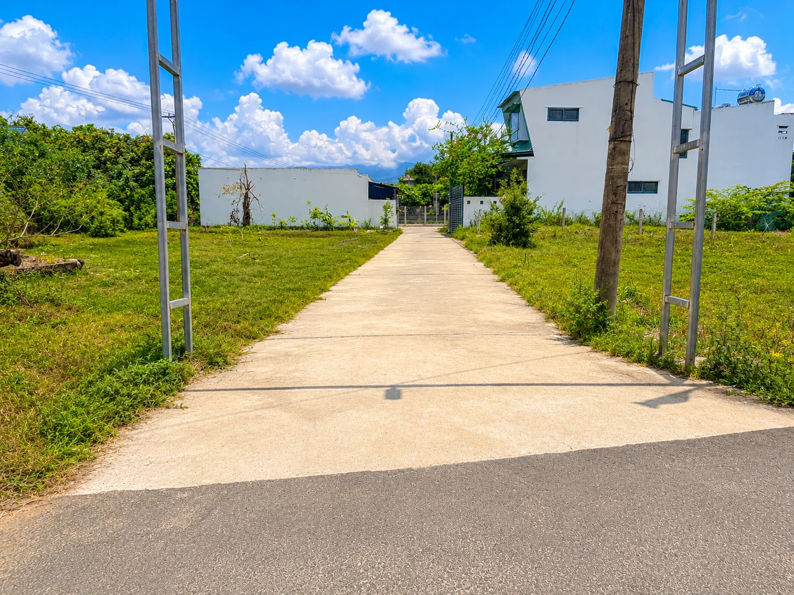

173,1 m² • ngang 8m, nở hậu 10m
Dáng đất mở về phía sau, thuận lợi bố trí nhà ở, sân vườn hoặc không gian để xe.
BÁN ĐẤT DIÊN KHÁNH • DIÊN LẠC • KHÁNH HÒA
Lô đất 173,1m² tại Diên Lạc (Diên Hòa cũ), khu vực Diên Khánh – Khánh Hòa; có 60m² đất ở, ngang 8m nở hậu 10m, hiện trạng hai mặt tiếp giáp đường. Giá chào bán 1,2 tỷ, phù hợp để cân nhắc làm nhà vườn hoặc giữ tài sản trung – dài hạn gần Nha Trang.

THÔNG TIN LÔ ĐẤT
Phần này tách riêng để anh/chị có thể xem nhanh toàn bộ dữ kiện quan trọng trước khi đọc câu chuyện quy hoạch và hạ tầng của khu vực.
Dáng đất mở về phía sau, thuận lợi bố trí nhà ở, sân vườn hoặc không gian để xe.
Phần diện tích còn lại có thể xem xét chuyển mục đích theo nhu cầu, quy hoạch và quy định pháp luật tại thời điểm thực hiện.
Tạo độ thoáng và nhiều phương án tiếp cận thực tế hơn so với lô chỉ có một phía mở.
Điểm thực tế đáng quan tâm với người mua để ở, đi lại gia đình hoặc đưa khách đến xem đất.
Không phải vị trí tách biệt. Theo thông tin chủ đất, các tiện ích thiết yếu như trường học, chợ, siêu thị, nhà hàng và trung tâm y tế có thể tiếp cận trong khoảng 5–7 phút.
Trục này được chủ đất mô tả kết nối thẳng ra tuyến đường lớn và khu vực trung tâm hành chính mới — một lợi thế cần kiểm tra trực tiếp trên hồ sơ quy hoạch khi xem đất.
Theo ghi nhận của chủ đất, khu vực mát mẻ và chưa gặp tình trạng ngập tại vị trí lô đất ngay cả trong các đợt mưa lớn đã trải qua.

VỊ TRÍ LÀ LUẬN ĐIỂM ĐẦU TƯ
Lô đất ở tọa độ 12.248822, 109.052872 — khu Diên Hòa cũ, nay thuộc Diên Lạc. Đây là vành đai phía tây Nha Trang, nơi nhà đầu tư có thể theo dõi đồng thời nhịp đô thị hóa, giao thông liên vùng và kết nối biển – cao nguyên.
Khoảng 20 phút về khu vực biển Nha Trang trong điều kiện giao thông thuận lợi*. Phù hợp người muốn ở rộng hơn, yên hơn nhưng vẫn giữ kết nối thành phố.
Dự án đường giao thông liên vùng Diên Khánh dài 19,15 km đi qua Diên Lạc, được thiết kế vận tốc 60 km/h; các đoạn qua khu dân cư theo lộ giới quy hoạch rộng 30 m.
Cao tốc Nha Trang – Đà Lạt đang được thúc đẩy theo hình thức PPP, nhằm tăng liên kết Nam Trung Bộ – Tây Nguyên. Đây là câu chuyện kết nối vùng dài hạn, không phải cam kết tăng giá cho riêng lô đất.
BỨC TRANH 2026 → 2050
Điểm hấp dẫn của khu vực không nên được kể bằng lời “sắp tăng giá”, mà bằng những thay đổi có văn bản và dự án cụ thể. Đây là những động lực cấp vùng có thể làm thay đổi khả năng kết nối và cấu trúc đô thị trong nhiều năm tới.
Quy hoạch tỉnh điều chỉnh được phê duyệt ngày 26/6/2026 xác định mục tiêu đến 2030 Khánh Hòa trở thành thành phố trực thuộc Trung ương, trung tâm dịch vụ – du lịch biển quốc tế, với hạ tầng và hệ thống đô thị phát triển đồng bộ, hiện đại.
Nguồn: Sở Xây dựng Khánh Hòa ↗Tuyến dài 19,15 km đi qua Bắc Nha Trang, Diên Lạc, Diên Điền, Diên Thọ và Suối Hiệp. Đây là hạ tầng có liên hệ trực tiếp hơn với khu vực lô đất và là điểm nên theo dõi sát trong câu chuyện đầu tư.
Nguồn: Báo Khánh Hòa ↗Tháng 7/2026, tỉnh phê duyệt chủ trương đầu tư tuyến Vành đai 3 dài hơn 5,2 km, nối Nguyễn Tất Thành – Võ Nguyên Giáp, tổng vốn hơn 2.240 tỷ đồng, thực hiện giai đoạn 2026–2030. Tuyến không đi qua lô đất, nhưng là một phần của mạng lưới mở rộng không gian đô thị Nha Trang.
Nguồn: Báo Khánh Hòa ↗Năm 2026, Khánh Hòa tiếp tục thúc đẩy thủ tục đầu tư tuyến cao tốc theo PPP. Nếu triển khai theo chủ trương, tuyến sẽ tăng năng lực kết nối Nha Trang với Đà Lạt và Tây Nguyên, củng cố vai trò cửa ngõ vùng của Khánh Hòa.
Nguồn: Bộ Xây dựng ↗HÌNH ẢNH THỰC TẾ
Bộ ảnh ghi lại chính khu đất, đường đi và khu dân cư xung quanh để anh/chị hình dung rõ hiện trạng trước khi đi xem thực tế.




NHẬN BỘ THÔNG TIN LÔ ĐẤT
Để lại số điện thoại để nhận vị trí Google Maps, hình ảnh thực tế và thông tin lô đất đang có. Chị/anh tự xem trước, thấy phù hợp rồi mới hẹn đi thực tế.